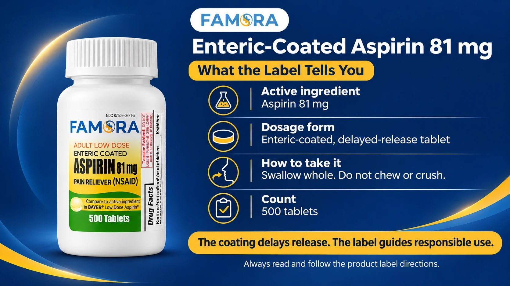

“Enteric coated” may sound like a secret ingredient, but it actually describes how a tablet is made—not what the active ingredient is.
An enteric-coated tablet has a special outer layer designed to delay the release of the medicine until after the tablet has passed through the stomach. That is why enteric-coated products may also be described on their labels as delayed-release tablets.
Famora Low Dose Aspirin contains aspirin 81 mg as its active ingredient and comes in a 500-count enteric-coated tablet format. Understanding those label terms can help shoppers compare the product correctly and use it according to its Drug Facts directions.
The Quick Answer: What Does Enteric Coated Mean?
Enteric coated means that the tablet has a coating intended to remain intact while it passes through the stomach and release the medicine later in the digestive tract.
The FDA classifies enteric-coated products as a type of delayed-release dosage form. The coating changes when the active ingredient begins to release. It does not change the identity or strength of the active ingredient.
For Famora Low Dose Aspirin, the key facts are:
| Label fact | What it means |
|---|---|
| Active ingredient | Aspirin 81 mg |
| Drug class | NSAID, or nonsteroidal anti-inflammatory drug |
| Purpose on the OTC label | Pain reliever |
| Dosage form | Enteric-coated, delayed-release tablet |
| Count | 500 tablets |
| Administration | Swallow whole; do not chew or crush |
Low dose describes the 81 mg strength in each tablet. It is not, by itself, a recommendation that the product is appropriate for a particular person or purpose.
Enteric Coated and Delayed Release: Are They the Same?
For this product, the terms are closely connected.
Enteric coated describes the physical coating applied to the tablet. Delayed release describes what that coating is designed to do: postpone the release of the active ingredient until after the tablet passes through the stomach.
Delayed release should not be confused with extended release.
- Delayed release postpones when release begins.
- Extended release is designed to release an ingredient over a longer period.
Famora Low Dose Aspirin 81 mg is identified on its official label as an aspirin delayed-release tablet.
Internal image placement

What Is Low Dose Aspirin 81 mg?
Low dose aspirin 81 mg refers to an aspirin tablet containing 81 milligrams of aspirin as the active ingredient.
The official Famora Drug Facts label identifies aspirin 81 mg as an NSAID and lists its purpose as a pain reliever. Its labeled use is the temporary relief of minor aches and pains. The label directs consumers to ask a doctor about other uses for aspirin.
This distinction matters because online searches for low dose aspirin 81 mg often include questions about daily aspirin or cardiovascular use. The strength shown on the front of a bottle does not tell someone whether they personally should begin an aspirin regimen.
The FDA advises consumers to speak with a healthcare professional before using aspirin to reduce the risk of heart attack or stroke. Daily aspirin is not right for everyone, and its potential benefits must be weighed against risks such as bleeding.
What Is the Aspirin Active Ingredient?
The active ingredient is the component responsible for the product’s intended effect.
In Famora Low Dose Aspirin, the active ingredient is:
Aspirin 81 mg in each tablet
The label also identifies aspirin as an NSAID. When comparing aspirin 81 mg tablets across brands, shoppers should review more than the active ingredient alone.
They should also compare:
- Strength
- Dosage form
- Uses
- Directions
- Warnings
- Inactive ingredients
- Tablet count
- Expiration date
- Package seal
Two packages may list the same aspirin active ingredient but still differ in dosage form, inactive ingredients, count, appearance, and other label details.
Can You Crush Enteric Coated Aspirin?
No. The Famora label directs users to swallow the tablets whole and not chew or crush them.
Crushing or chewing an enteric-coated tablet can damage the coating responsible for its delayed-release format. The label also directs users to drink a full glass of water with each dose.
If swallowing the tablet is difficult, do not modify it without guidance. Ask a pharmacist or other healthcare professional about an appropriate alternative.
Does Enteric Coated Mean “Stomach Safe”?
No medicine should be described as “stomach safe” simply because it is enteric coated.
The coating is intended to delay the tablet’s release until it passes through the stomach. However, aspirin remains an NSAID, and the official Drug Facts label still includes a serious stomach bleeding warning.
Research reviews have also found that enteric coating should not be treated as guaranteed protection against clinically important gastrointestinal complications. The format changes where release begins; it does not eliminate aspirin’s warnings or risks.
Consumers should still read the complete label, especially if they:
- Are age 60 or older
- Have experienced stomach ulcers or bleeding problems
- Take an anticoagulant, steroid or another NSAID
- Consume three or more alcoholic drinks every day
- Have a history of stomach problems
- Take more than directed or use the product longer than directed
This is not the complete warning. Always review the full Drug Facts label before use.
Important Aspirin 81 mg Warnings to Read
The Drug Facts panel contains more than directions. It explains when aspirin should not be used, when professional guidance is needed and which symptoms require stopping use and seeking medical help.
The Famora label includes warnings concerning:
Stomach bleeding
Aspirin is an NSAID and may cause severe stomach bleeding. The label identifies factors that can increase this risk.
Allergic reactions
Aspirin may cause a severe allergic reaction. The label lists possible signs including hives, facial swelling, wheezing and shock.
Reye’s syndrome
Children and teenagers who have or are recovering from chickenpox or flu-like symptoms should not use the product because of the risk of Reye’s syndrome.
Other medicines and health conditions
The label advises consumers to ask a doctor or pharmacist before use in several situations, including when taking certain prescription drugs or when specific health conditions apply.
Pregnancy and breastfeeding
The label directs people who are pregnant or breastfeeding to ask a healthcare professional before use. It specifically warns against aspirin use at 20 weeks or later in pregnancy unless directed by a doctor.
These summaries do not replace the complete Drug Facts panel.
Is Low Dose Aspirin 81 mg for Daily Heart Use?
Not automatically.
Low dose aspirin is frequently associated with cardiovascular care, but that does not mean everyone should begin taking it daily. The Famora OTC label lists the product’s purpose as a pain reliever and instructs consumers to ask a doctor about other aspirin uses.
According to the FDA, only a healthcare professional can determine whether regular aspirin use is appropriate for reducing an individual’s risk of heart attack or clot-related stroke.
Do not start, stop or change a daily aspirin regimen based only on a product name, article or online search. If a healthcare professional has already instructed you to take aspirin regularly, follow their directions and ask before making changes.
What Does the 500 Count Tell You?
Famora Low Dose Aspirin 81 mg comes in a 500-tablet bottle.
The count tells shoppers how many tablets are inside the package. It does not provide dosing instructions or indicate how frequently the product should be used.
Before choosing a high-count OTC product, check:
- Whether the product matches the active ingredient and strength you need
- The complete directions and warnings
- The expiration date
- The safety seal
- How the product should be stored
- Whether a healthcare professional has provided separate instructions
Count is an important shopping detail, but the Drug Facts label should guide responsible use.
The Main Takeaway
Enteric coated describes the tablet’s delayed-release format. It does not describe a different active ingredient, remove aspirin’s warnings or determine whether low dose aspirin is appropriate for someone.
When reviewing enteric-coated aspirin 81 mg:
- Confirm the active ingredient and strength.
- Understand that enteric coated means delayed release.
- Swallow the tablet whole.
- Do not chew or crush it.
- Review the complete warnings and directions.
- Ask a healthcare professional before using aspirin for a purpose not listed on the label.
The coating explains how the tablet releases. The Drug Facts label explains what consumers need to know before using it.
Frequently Asked Questions
Enteric coated means a tablet has a coating designed to delay the release of its active ingredient until after it has passed through the stomach.
Enteric-coated aspirin is a type of delayed-release aspirin. The coating is designed to postpone when the active ingredient begins to release.
The coating is designed to remain intact in the stomach and release the active ingredient later in the digestive tract, generally after the tablet reaches the intestinal environment.
No. The Famora label instructs users to swallow the tablet whole and not chew or crush it because doing so can damage the delayed-release coating.
Each tablet contains aspirin 81 mg as the active ingredient. The label identifies aspirin as an NSAID.
No. Enteric-coated aspirin still carries the NSAID stomach bleeding warning. The coating should not be interpreted as guaranteed protection against gastrointestinal complications.
Only if a healthcare professional determines that regular aspirin use is appropriate for you. Do not begin a daily aspirin regimen based solely on general online information.
This content is for general educational purposes only and is not medical advice. Consult a healthcare professional if you have questions about aspirin use or whether a product is appropriate for you.